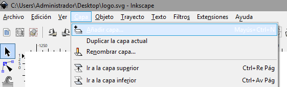
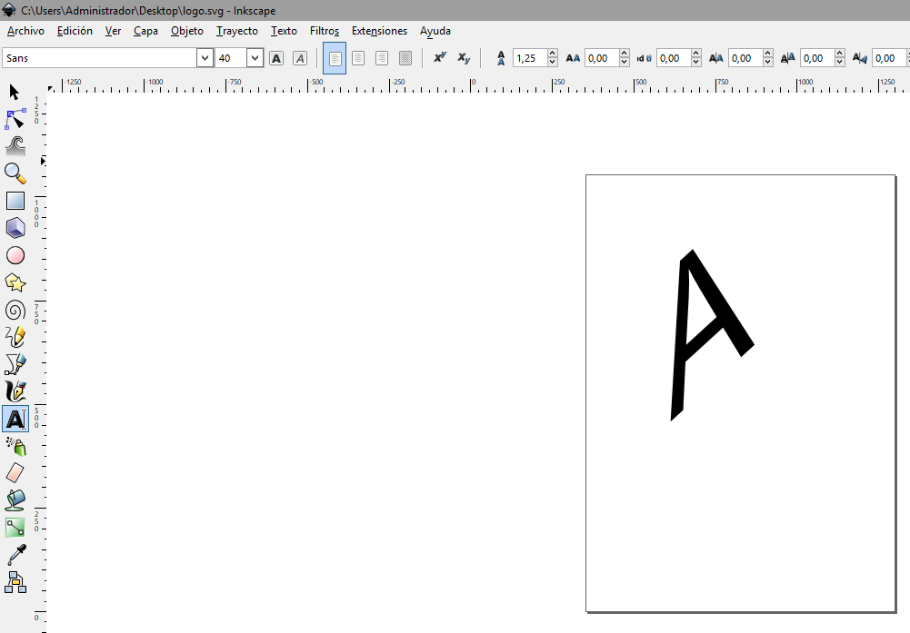
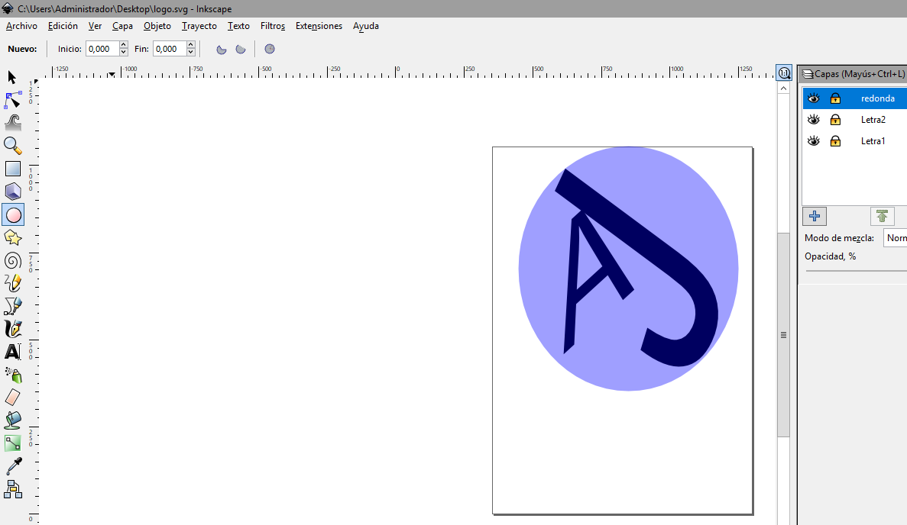
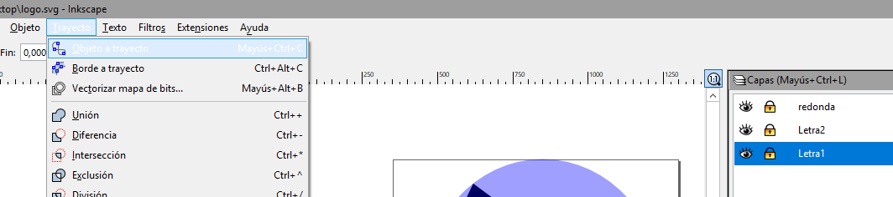

TUTORIAL SVG
1. Crear una capa para hacer un objecto. Para crear la capa, hay que a "Capa -> Añadir Capa"
2. Para añadir una letra a nuestro logo, seleccionamos la herramienta con la A de imagen. Y la editamos con las flechas que salen cuando la seleccionamos.
3. Para añadir el circulo al logo, seleccionamos la herramienta con un circulo dibujado. Y la editamos con las flechas que salen cuando lo seleccionamos.
4. Antes de guardar la imagen (solo texto) en svg, hay que ir a "Trayecto -> Objeto trayecto" para cada texto creado
5. Para finalizar ir a "Archivo -> Guardar como -> formato svg" y se vera asi la imagen.